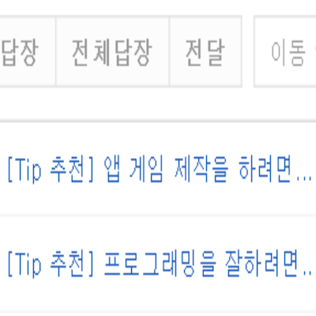
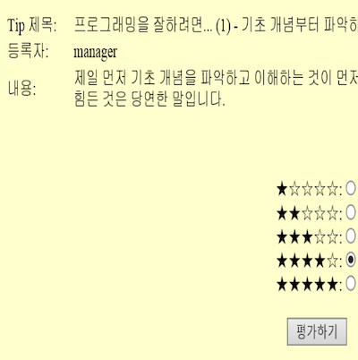
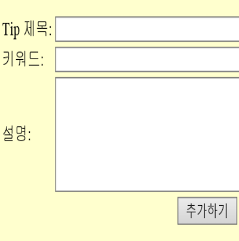
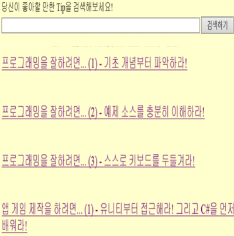

|  |
Tipをおすすめする機能 そのユーザーが好きなTipを設定した周期に応じて、メールでお勧めできます。 |
|  |
Tipを評価する機能 おすすめのTip or検索で表示したTipに評価を与えることができます。 これらの評価は、別のTipを推薦するための指標として使用されます。 |
|  |
Tipを追加する機能 必要に応じて直接Tipを登録できます。 |
|  |
Tipを検索する機能 ホームページにアクセスして現在存在するTipを検索できます。 このように検索後に照会することも別のTipを推薦するための指標として使用されます。 |